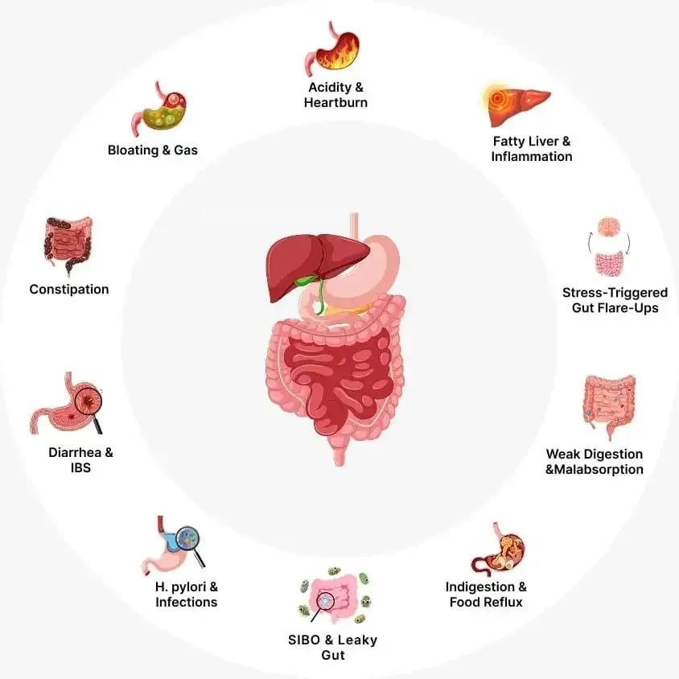
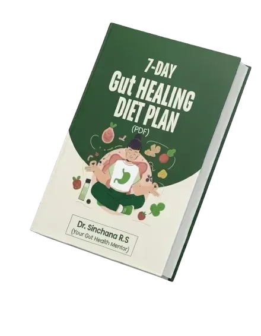
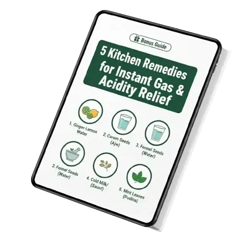
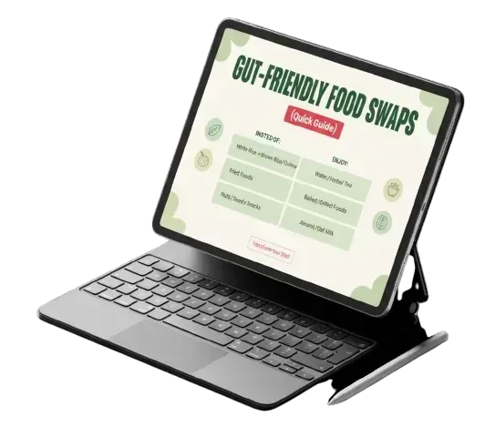
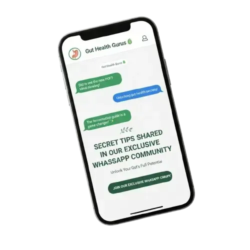

5,000+ long-term sufferers reversed IBS, GERD, H. Pylori & bloating permanently— after probiotics, PPIs, and diets all failed. Discover the 5-Step Gut Lining Repair Protocol that finally worked.

Most people think antacids and probiotics are "keeping things under control."
But here's the truth no one tells you: Every day you suppress symptoms without healing the damage, your gut gets weaker.
And a weak gut doesn't just affect your stomach. It silently destroys your entire body—one system at a time.
See the difference between suppressing symptoms with medication versus fixing the root cause.
Damaged and reactive, unable to absorb nutrients or regulate itself properly.
Lining repaired, acid levels balanced, gut bacteria restored.
🔒 100% Satisfaction Guarantee • 2-Hour Live Interactive Workshop
Keep "managing" symptoms with pills while your gut damage gets worse.
Learn the 5-Step Naturopathy Protocol 5,000+ patients used to reverse their gut issues permanently.
India’s Leading Gut Health Expert
Early in her practice, Dr. Sinchana noticed a disturbing pattern. Her patients would come back every few months—same symptoms, different medications, no real healing. PPIs gave temporary relief. But symptoms returned the moment they stopped. Antibiotics cleared infections. But gut damage remained.
She realized: medications suppress symptoms. They don't repair damage. That's when she developed the 5-Step Gut Reversal System—a naturopathy protocol that heals gut lining inflammation, rebalances bacteria, and restores natural digestion.
The result? 5,000+ patients have achieved permanent relief—without lifelong medication.
#Bonus 1
7-Day Gut Healing Diet Plan (PDF)

#Bonus 2
5 Kitchen Remedies for Instant Gas & Acidity Relief

#Bonus 3
Gut-Friendly Food Swaps List

#Bonus 4
Secret Tips Shared in Our Exclusive WhatsApp Community

Got questions? We've got answers.